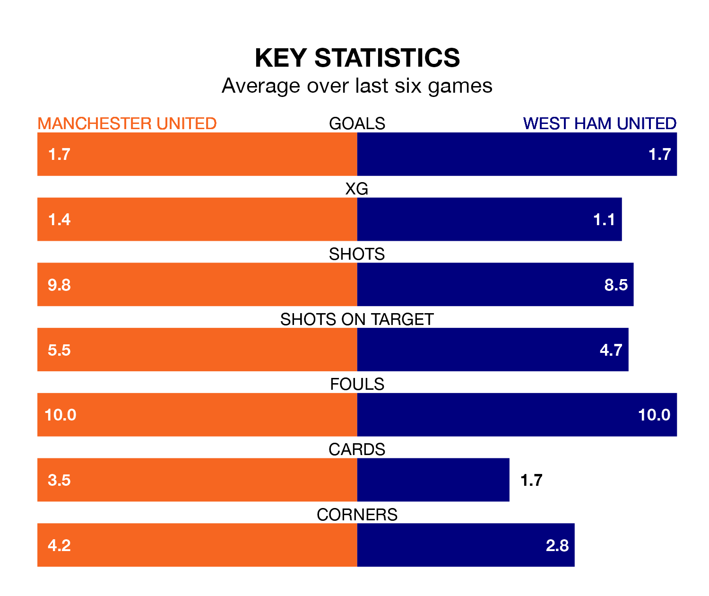

West Ham United face Manchester United on Sunday seeking to protect their long unbeaten run in the Premier League.
The Hammers are unbeaten in six, with three wins and three draws, ahead of the 2pm kick-off.
They face a Manchester United team who have won two and drawn two over the same number of games.
In the last 10 years, Manchester United and West Ham have played each other on 26 occasions. Manchester United won 14 of them, West Ham six, and they drew six times.
On average, the Red Devils scored 1.4 goals and the Hammers 0.9 in those matches.
Their last meeting was on December 23, when West Ham won 2-0 at home.
In André Onana, Manchester United can rely on one of the league's safest pair of hands. He has kept six clean sheets in his 22 appearances this season, and only two other 'keepers – Everton's Jordan Pickford and Liverpool's Alisson Becker – have been able to prevent the opposition scoring on more occasions in the Premier League.
In West Ham's net, Alphonse Areola has four clean sheets in 19 games.
With 28 goals in 22 games so far this season, the Red Devils are scoring at below the league average rate with 1.3 goals per game. But they are conceding fewer than average too, letting in 32 goals at a rate of 1.5 per game.
West Ham United, meanwhile, are average scorers, with 1.6 goals per game. They have conceded 1.5 goals per game.
The Hammers are sixth in the table after 22 games, of which they have won 10 and drawn six, earning 36 points.
The home side are one place behind the visitors in seventh, with 11 wins and two draws putting them on 35 points.
Manchester United's last match was on Thursday, a 4-3 win against Wolverhampton Wanderers, with Kobbie Mainoo, Marcus Rashford, Rasmus Højlund and Scott McTominay getting the goals for the Red Devils.
West Ham drew 1-1 with AFC Bournemouth last time out, also on Thursday, with James Ward-Prowse on the scoresheet.
Updated: 15:45 (UTC), 02/02/24